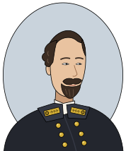
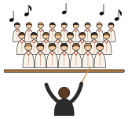

Микола Дмитрович Леонтович
13 грудня 1877 – 23 січня 1921
Композитор, хоровий диригент, педагог і громадський діяч, якого називають «українським Бахом». Його обробка народної щедрівки «Щедрик» облетіла весь світ і стала відомою як «Carol of the Bells».

Коротко про композитора
Микола Леонтович народився на Поділлі, у родині сільського священника, де музика звучала щодня: батько грав на скрипці та віолончелі, мати гарно співала. Усе своє життя він присвятив українській пісні – збирав її по селах, записував і перетворював на витончені хорові твори.
Леонтович працював учителем співу в школах Поділля та Донбасу, створював хори й оркестри, а згодом став одним із творців професійної української хорової музики. Його обробки «Щедрик», «Дударик», «Козака несуть», «Піють півні» і сьогодні входять до репертуару хорів у різних країнах світу.

Цифри та факти
Розділи сайту
Біографія
Дитинство на Поділлі, навчання, вчителювання та трагічна загибель.
Детальніше →
Творчість
Хорові обробки, авторські твори, незавершена опера та педагогіка.
Детальніше →
«Щедрик»
Як українська щедрівка стала світовим різдвяним символом.
Детальніше →
Пам'ять
Музеї, пам'ятники, вулиці та навчальні заклади імені композитора.
Детальніше →